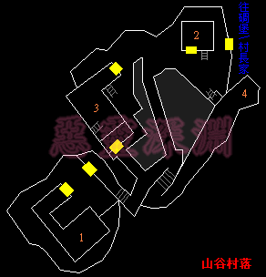
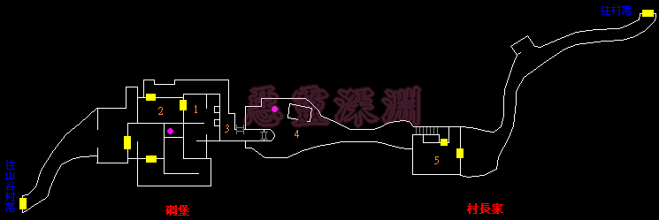
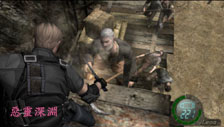

|
惡靈古堡∼惡靈古堡４----地圖攻略∼1-2
|
|
攻略內容以Normal為主，地圖上的紫色圓點●表示高價寶物的位置 ，標綠色的道具則是過關必須的重要道具。
 開頭動畫進行到一半，也就是村民拿斧頭要砍兩人時，必須做出提示的複合按鍵來躲避。恢復自由身之後，確認自己的位置在地圖 上編號１的房子裡。正準備要出去時，會碰上武器商人，到屋後去找他整理一下裝備吧。 購物指南：
公事包M可以立刻提升攜帶道具數，建議購買。寶物地圖（村子）會把村子中的高價寶物位置標示出來，初次遊戲的玩家 要買。火箭筒只有一發，用完即丟，很佔空間，沒必要就不要買。急救噴霧不一定會有，要視玩家身上有沒有急救噴霧， 若是玩家身上沒有恢復道具（急救噴霧、藥草）或只有一個未組合的藥草，則可購買兩個急救噴霧；若玩家身上的恢復道 具在兩個以下（若只有未組合藥草則在三個以下）可以購買一個急救噴霧；恢復道具超過上述數量時，就不能購買。 在山谷有很多村民駐守，想要離開的話必須拿到兩塊六角形紋章碎片，位置分別在編號３倉庫二樓、編號４。想要多賺錢的話，找 個安全的地方將村民們一一擊破（例如編號２的屋頂、編號２和編號４之間有梯子的小高台），在這個區域也有幾個油桶可以利用 ，用小刀也會引爆，要注意自己的安全。 將兩塊碎片組合後就可以打開門前往碉堡。
 進入碉堡前有幾個木桶可能藏有道具，用小刀來確認吧。 在碉堡之中難免有場激戰，行進到編號１的房間時要特別小心，不但有村民的炸藥攻擊，而且四處都佈滿捕獸夾，尤其不要隨意翻 越拿炸藥的村民藏身的障礙。解決敵人後，小心避開捕獸夾前進，右側兩個紅色的火爐有道具可拿。 編號２的房間可以通往放有高價寶物的房間，用小刀破壞窗口，進去拿くぼみのある仮面（有凹槽的面具）。 到編號３處時，看到有個通往下方的梯子，下面是一片水池，除了有些道具，還有幾隻鱸魚，其中還有特別大的大型鱸魚，不但可 以恢復全部的體力，就算不使用，也可以賣個好價錢，所以還有空間的玩家請砍了帶走。 回到地面上編號４的地方，先賞顆閃光彈給烏鴉們，附近水井同樣射擊支架使蓋子蓋上，然後擊落上方的黄銅の懐中時計（黃銅的 懷錶），若沒蓋上蓋子，則是黄銅の懐中時計＿臭（黃銅的懷錶＿臭）。接著上樓梯進入村長家。 上二樓碰上鎖住的門，必須調整綠色圓球中的圖案，圖案的正解就是在圓球左右下方的圖形，只要轉動成那種圖形門就打開了。 門裡面看起來像是村長的寢室，有些道具、村長的Memo，還有重要的紋章的鑰匙，從另一扇門離開這個房間，1-2結束。
疑難解答
黄銅の懐中時計（黃銅的懷錶） 10000ptas 黄銅の懐中時計＿臭（黃銅的懷錶＿臭） 1000ptas 有凹槽的面具鑲嵌了三顆寶石之後價值就會大大的提高，所以現在先別賣了吧。
民爬上梯子的時候使用小刀攻擊，村民受到攻擊就會墜落，如此一來，Leon就可以毫髮無傷地解決村民。 要注意會拋擲武器的敵人，應該要優先解決。
 未經許可禁止轉載連結 |
||||||||||||||||||||||||||||||||||||||||||||||||||||||||||||||||||||||||||||||||
惡靈深淵Biohazard Abyss http://98.to/coolbio